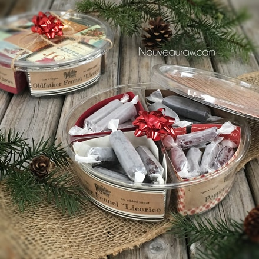
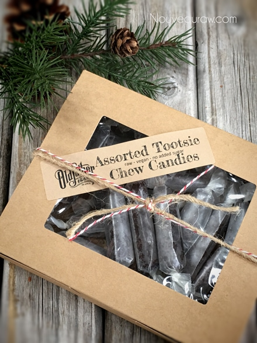
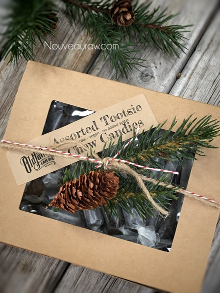
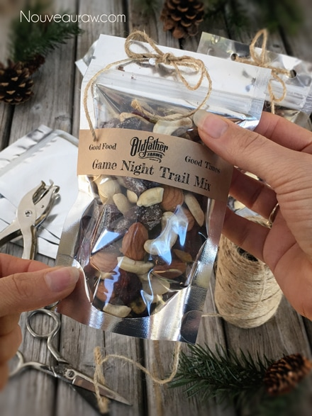
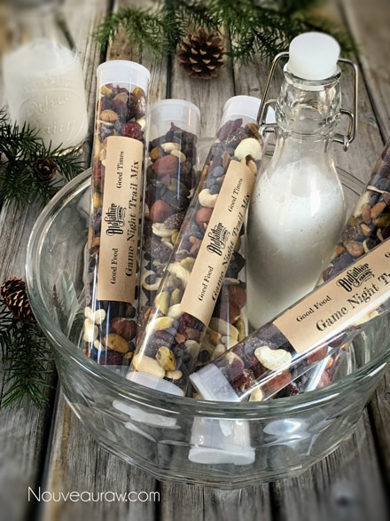
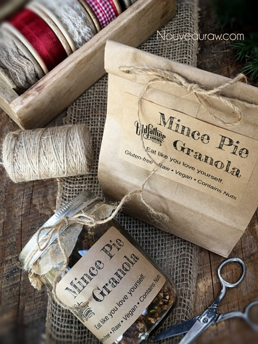
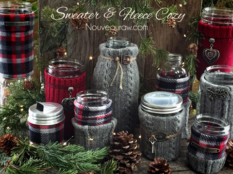

Christmas and Gift Packaging Ideas
 If you enjoy playing in the kitchen, then you probably enjoy giving food gifts to friends and family. Christmas time isn’t the only time I give food gifts; it’s a pretty much a frequent thing for me. But there is something extraordinary about giving out “baked” goods during the Christmas holidays.
If you enjoy playing in the kitchen, then you probably enjoy giving food gifts to friends and family. Christmas time isn’t the only time I give food gifts; it’s a pretty much a frequent thing for me. But there is something extraordinary about giving out “baked” goods during the Christmas holidays.
The creative art of wrapping gifts has been slowly dying with the onset of paper bags and plastic containers. Today I want to encourage you to resurrect this art during this holiday season with the gifts of food that you give.
So much beauty can be created not only in the food but also through the presentation of the gift. Presenting an artistic, creatively wrapped gift is just one way to express a bit more thought and love. Who doesn’t enjoy receiving a beautifully wrapped present?
Don’t let a limited budget discourage you; there are so many beautiful vessels that can be used for packaging, and they don’t have to be expensive. These days when I am out shopping, I view just about everything as a vessel that can be used to package up goodies. Try to use items that can be used again once the sweet treats have been thoroughly enjoyed. Use and reuse is the best way to go.
Remember, a beautiful presentation can help to express our hearts with even the most simple of food gifts and reflect more clearly that it truly is “the thought that counts.”
Last year, I posted how Bob and I have switched to wrapping our gifts in cloth to cut down on waste. We don’t use tape; instead, we use twine and ribbons, which can be reused over and over. Click (here) to read more about it.
Click on this link for more Edible Gift Ideas (food and packaging tips) as well as shipping tips. I will be sharing all the candy recipes that you see in the following photos throughout this month. Blessings, amie sue
A few years back I shared how to make these Vintage Knobby Jar Gift Idea
which are perfect for holding granolas and other raw treats.

These containers are courtesy of the olive bar in our
local grocery store. Sometimes they will just give you
a few, or at least sell them for a small amount. Always ask.

Windowed cardboard boxes offer a beautiful presentation.
They come in many shapes and sizes.

Adding a sprig of pine or Christmas picks on top is very decorative.

These small bags are perfect for displaying all the yumminess
that is nestled inside. These are solid silver on the back and
clear on the front. I printed labels, but if you don’t have a
printer, you can write on labels too. Make it personal!

I LOVE these gumball tubes. Perfect for gift giving or even just
for popping in lunch pails, backpacks, or your purse. Note… secure
the ends with tape if you plan on shipping them or also throwing
them in a bag. Mine popped open in my luggage. :) A snack for TSA?

Clear bags and jars also create an excellent gift-giving vessel.

I love the look of these pillow boxes (solid, clear). They also come in
many shapes and sizes.

Again… jars with decorative lids! OMG-cuteness-factor!

They also sell clear buckets that come in many sizes, as well. I
lined the inside with some card stock paper, just giving it that
a unique personal touch.

This turned out to be one of my all-time favorites. A glass butter
dish from the Dollar Store! Perfect for presenting truffles. Just
tie a ribbon or twine around it to secure it shut.

You can find all sorts of boxes at your local craft stores too!

Brown lunch bags! You will find these in the plastic wrap/foil
section of the grocery store. Add a label, twine, or ribbon, and they
go from ordinary to extraordinary within seconds.

Another fun way to present a gift is in these Mason Jar Cozies.
Load them up with raw treats or teas, and they get double the gifts.

Here is wishing a wonderful holiday season for all my amazing subscribers. amie sue
© AmieSue.com